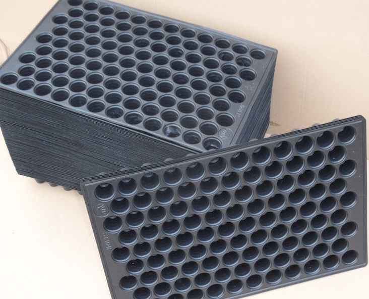

Trays & Clips
Trays
Why using seedling trays?
Production of good quality and healthy transplants is key for the start of a successful crop.
Traditionally sowing of the seeds is done as direct drill in the production field where the crop will be grown as often is done with melons, cucumber and watermelon.
Another way is to prepare a seedbed in the field, grow the young plants and transplant from there into the field at the production location.
The downside of the above two methods are:
· With direct sowing in the production field the farmer uses most times two seeds per seeding hole. Depending the germination of the seeds there will be one, two or no plant. As a consequence the final plant density will be irregular and when the germination has been very good there will be a lot of double plants of which generally one will be removed. In this case too much seeds have been used.
· When using a seedbed the plants will be dug up, transported to the production field and transplanted. When plants are dug up there is a serious risk of damaging the roots, while during the transport plants may dry out. After transplant many young plants may die back due to root-damage through which diseases may enter the plants or that plants are unable to take up enough water and nutrients to settle and restart their growth.

The advantage of using seedling trays:
· No root damage as the plant with the whole plant with roots and growing medium will be transplanted.
· No drying out of plants as plants can be transported to the production field in the trays.
· No die back of transplants in the field due to root damage through which diseases can enter the plants.
· Quick settlement and growth of the transplants as roots have not been damaged.
We supply re-useable trays for transplant production.
The size of these trays are 54,5 x 35,5 x 4 cm.
The trays have 104 holes of ∅ 4cm and 4cm depth.
We advise to disinfect the trays before re-using.
Clips
Proper trellising of tomato, cucumber, pepper plants is important for obtaining maximum yields and good quality fruits.
The traditional method of screwing the plants into the supporting twine often leads to broken stems and other damages to the plant, such as breaking of flower buds and sometimes disruptes the growing of the plants.
Clips do not hamper growth, stems will not break nor damage the plants.
The use of clips is less labour intensive than the traditional way of screwing plants into the supporting twine.
The clips have a diameter of 22 mm and have a large twine holder.
The female part of the hinge has a large opening in which the male part will fit with an audible "click".